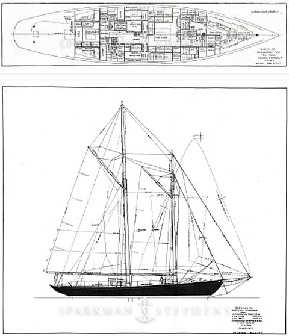

1937
The Genesis
In the shipyards of Causeway Bay, the Ah King Slipway gives birth to elegance. Designed by the legendary Sparkman & Stephens, a 25-meter gaff-rigged schooner emerges from timber and dreams. So Fong — a vessel destined for adventure, crafted with the precision of naval architecture and the soul of Hong Kong.
